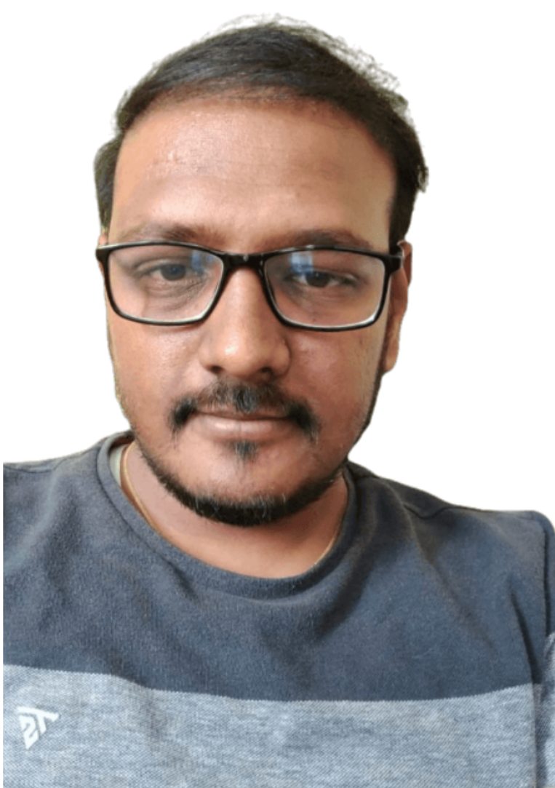

Harish Kumar Mallari

Summary
Software Engineer V with over 8 years of experience in the field of Software Development Engineering; currently
associated with HPE. Bangalore as Specialist .Experience in Software Development using C/C++. Experience
simulation of NIC by reading ASIC implematation details of NIC ASIC documents.Experience in FC/FCoE
development feature for cisco switches. Expertise in Packet switching and Forwarding in Storage Area Network.
Excelled in Software Development and Design, Optimization, Maintenance and Enhancement. Experience in
handling Customer escalations, Customer Defects and Customer queries etc. Strengths include critical thinking,
problem solver and ability to adapt new technologies. Target job is to get challenging software development role.
Education
Work Experience
-
Software Engineer V - HPE
April 2022 - Current
- Utilized crucial design and C++ programming skills to assist with simulation of NIC card slingshot.
- Worked to enhance software systems to help ASIC designers to get the benchmark performance by reading
NIC Cassini documents.
- Responsibility is individually handling features of Forward the Request and Response path of a packet in
NIC.
- Effectively coded software changes and alterations based on specific design specifications.
Software Engineer IV - Cisco Systems
August 2014 - April 2022
- Led forwarding protocols development initiative as Subject Matter Expert and primary point-of-contact
for cisco DC switches MDS, N7K
- Designed, developed , coded Lossless In-order Gurantee for FCIP path
- Designed, Developed and Implemented slow drain feature for FCoE which helps to detect congestion over
network
- Resolved complex, timing problems before the release in quick time, improved operations and provided
exceptional client support
- Collaborated with cross-functional development team members of hardware to analyze potential system
solutions based on protocols for successful deliverables of FC/FCoE/FCIP switches in Storage Area
Networks
- Created proofs of concept for innovative new solutions to new FCIP switches
- Improved system consistency by implementing consistence checker which uses python script to identify
health of the system. Analysed and resolved scalability issues in consistency checker
- Contributed ideas and suggestions in team meetings and delivered updates on deadlines, designs and
enhancements
- Worked with project managers, developers, quality assurance and customers to resolve technical issues
Skills
- Problem Solving, Data Structures: ⭐️⭐️⭐️
- C, C++, Python : ⭐️⭐️⭐️
- TCP/IP, OSPF, L2/L3 Network
Protocols
FC Forwarding Protocols,FCoE,
FC2 ⭐️⭐️⭐️
- Linux System Programming
NxOS, GDB Debugging tool,
packet switching, Valgrind,
efence, acme, git ⭐️⭐️⭐️
Awards and certifications
other